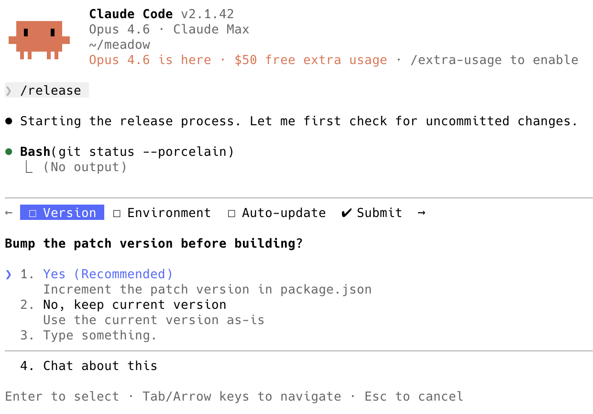

for simple workflows, smart agents can effectively run them as deterministic workflows
^ for link not tracked, smart agents can effectively run them as link not trackeds (link not tracked)
I've been thinking about something wrong.
I've been thinking: link not tracked
But that's not true, actually. It really depends how hard the workflow is.
For example, I'm working on a pretty simple workflow right now. I'm developing an agent skill that does application releases. There are a bunch of bash scripts in the project that are used for stuff like compiling the application, syncing it to S3, etc. To properly do a release, I need to essentially answer all these questions.
- should it use the slow (but needed-for-real-customers) Apple notarization process when building the app?
- which destination bucket (dev or prod)
- do I want to include release notes? (I might skip it if I'm just doing a test)
- should it increment the
auto-update-version.txtthat causes the app to ask the user if it can auto-update?
In the past I absolutely would have created a release shell script that wrapped all the sub-scripts and forced you to answer all those questions at the start.
But then I stepped back and thought about it. This is simple enough that project - Claude Code running AI unit - claude 4.6 Opus is never going to screw it up, and by making it a text-based skill, I can do all sorts of flexible stuff like have it help me draft the release notes, or ask it to name the release something really weird for a very specific purpose.
The other thing that's nice is that I can run it with no options and (like shown in link not tracked), it will ask me all those questions...

... but also, I can use project - wispr flow to just describe what I want beforehand so those questions will be pre-answered. If I happened to forget to specify a single choice ahead-of-time, it will bug me to answer just that one question. Fantastic!
So yeah, I think for a workflow like this, Claude Code is link not tracked. Hmmm... that's an link not tracked